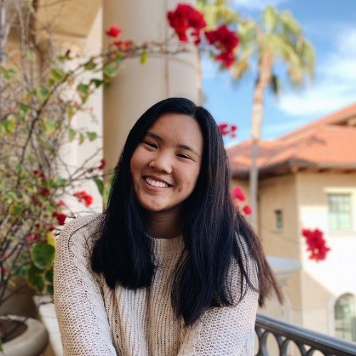

Welcome to The Brilliant Katie Chan's Fanpage!

Who is Katie today?
- Public Policy Major at the Sol Price School of Public Policy at USC
- Alpha Phi Omega Member
- Administrative/PR Chair of Nemirovsky and Bohnett Residential College
- Logistics Lead at Generation She
- Swimmer!
Katie Before USC
Our qwueeennn Katie spent her high school years in Toronto, having attended
Branksome Hall, an all girls International Baccalaureate World School! To this day she splits
her time between Canada and LA! #thankgod #stayinLAqueeen! She has always been an active swimmer. In high school she was an assistant swim instructor
for the City of Markham and on Branksome's swim team. She has continued swimming in college, being a member of USC's swim club. And she has always been adorable!

Her Literally Insane Resume!
- Teaching Assistant for USC Asian Pacific American Student Services
- Compliance Analyst for University of Toronto
- Business Development Intern for FleetOps
- Policy Analyst for Roosevelt Institute
- Community Outreach Coordinator at West Residential College
